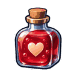
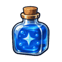
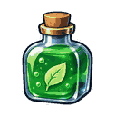
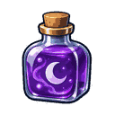

2D 리소스
캐릭터, UI 아이콘, 아이템, 타일맵, 스프라이트 시트. 일관된 스타일·투명 배경·애니메이션 분할을 검사합니다.
PNG / WebPSprite sheetAI로 게임에 들어갈 2D 이미지, 3D 모델, 음성·효과음을 만들 수 있을까? 모델 소개보다 결과물의 게임 적용 가능성을 기준으로 직접 검증하는 공간입니다.
캐릭터, UI 아이콘, 아이템, 타일맵, 스프라이트 시트. 일관된 스타일·투명 배경·애니메이션 분할을 검사합니다.
PNG / WebPSprite sheet프롭, 배경, 캐릭터 모델. 메시 구조·토폴로지·UV·텍스처·리깅·엔진 임포트까지 검증합니다.
glTF / GLBFBXNPC 대사, 내레이션, 감정 표현, 효과음. 발음·자연스러움·길이·노이즈·라이선스를 검사합니다.
WAV / OGGTTS / SFX어떤 게임 자산이 필요한가? 최종 파일 포맷·해상도·언어·엔진 제약을 명시합니다.
도구·모델 버전·프롬프트·생성 시간·수동 수정 작업을 빠짐없이 기록합니다.
가져오기 성공 여부, 시각·청각 품질, 제작 시간, 비용, 재현성을 검증합니다.
사용자가 주제를 정할 때만 새 실험을 진행합니다. 자동으로 다음 강의를 발행하거나 결과를 성공한 것처럼 기록하지 않습니다.
목표: 같은 화풍으로 4종의 아이템 아이콘을 생성하고 128×128 PNG로 정리합니다.
“판타지 RPG 아이템 UI용 붉은 포션 병 하나, 정면 3/4 시점, 굵고 균일한 외곽선, 읽기 쉬운 실루엣, 장식 최소화, 정사각형 구도, 글자·배경 소품 없음”
생성 모델이 투명 PNG·픽셀 정렬 등을 자동으로 보장하지는 않습니다. 별도 검수합니다.
목표: AI 기반 모델 생성 또는 이미지→3D 파이프라인으로 보물상자 메시를 제작하고 엔진에 가져옵니다.
동일한 콘셉트 아트에서 ① AI 직접 생성 ② AI 생성 후 Blender 보정 ③ 수작업 모델링을 비교합니다. 실제 결과가 준비되기 전에는 점수를 매기지 않습니다.
목표: 같은 대사를 서로 다른 감정으로 발화하고, 짧은 메뉴 선택 효과음을 만들어 사용성을 비교합니다.
“어서 오세요. 오늘은 어떤 장비를 찾으시나요?” — 중립 / 반가움 / 경계 세 버전을 비교하는 계획입니다.
동의받지 않은 실제 인물의 목소리 복제는 연구 대상으로 삼지 않습니다.
체력·마나·해독·비전 아이콘을 생성하고 각각 128×128 투명 PNG로 분리했습니다. 최초 두 생성 결과 모두 4종 합성 이미지였으므로 독립 생성 간 스타일 일관성은 미검증입니다.




웹 공개본 PNG는 64색 팔레트 최적화본입니다. 최초 검증한 RGBA 원본과 동일 바이트가 아니므로 별도 구분합니다.
| 평가 항목 | 기록할 내용 | 현재 상태 |
|---|---|---|
| 생성 품질 | 게임에서 요구하는 시각·청각 품질을 충족하는가? | 미측정 |
| 기술 호환성 | 포맷, 크기, 엔진 임포트, 수정 가능 여부 | 미측정 |
| 재현성 | 동일 조건에서 비슷한 결과가 반복되는가? | 미측정 |
| 작업 효율 | 생성·후처리 총 시간과 비용은 얼마인가? | 미측정 |
| 권리·운영 위험 | 라이선스·출처·음성 동의·제3자 권리 확인 | 미확인 |
각 실험이 시작되면 사용 도구·버전·입출력 파일과 실패 사례를 별도 회차 페이지로 남깁니다.